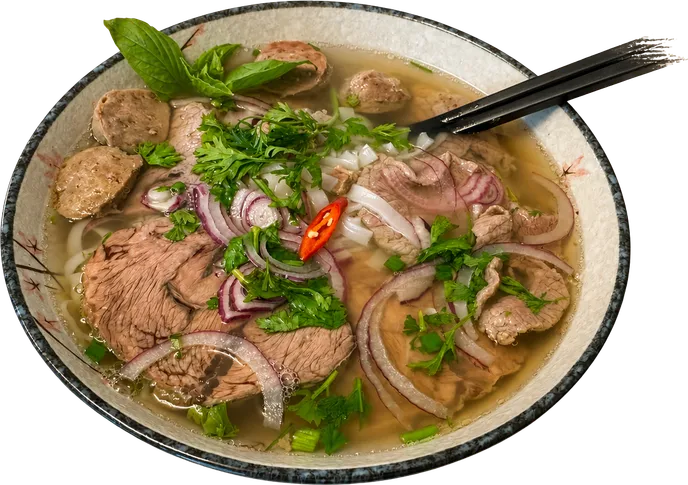
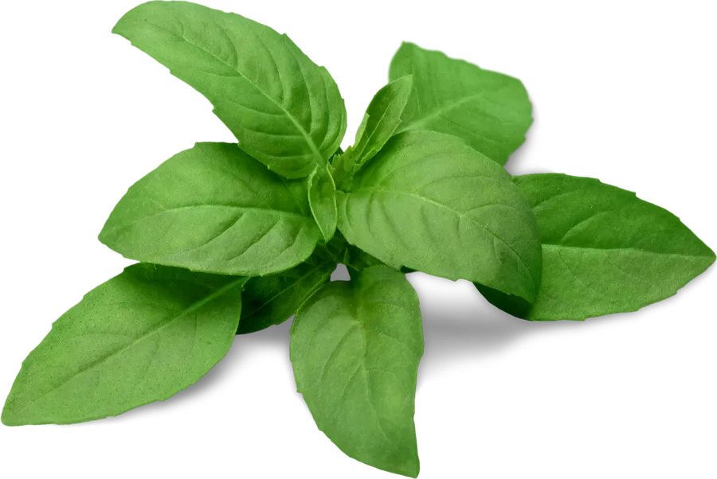
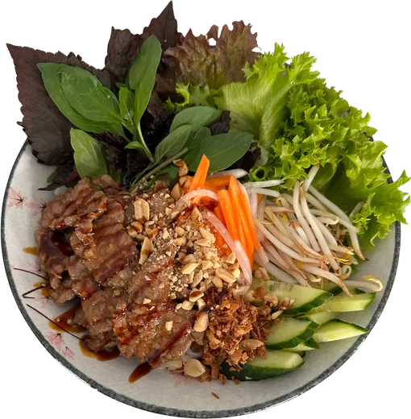
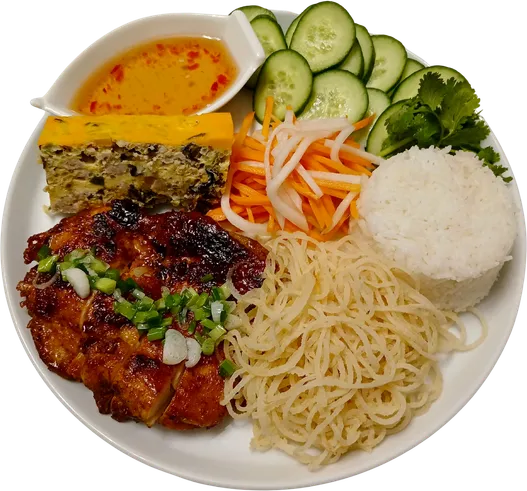

Phở, Bánh Mì und Bún – wie in Saigon.
Cô Tâm ist ein kleines, familiengeführtes Bistro in der Karl-Marx-Straße. Wir kochen vietnamesisch und thailändisch, mit hausgemachten Brühen und vielen frischen Kräutern.


Unsere Lieblinge
Eine kleine Auswahl aus unserer Karte.
-

Phở & Bún Bò Huế
Hausgemachte Brühen mit Reisnudeln, Limette, Sprossen und Kräutern. Phở mild und klar, Bún Bò Huế würzig-scharf.
-

Bánh Mì
Knuspriges Baguette mit hausgemachter Paté, Gemüse und Kräutern – mit Tofu, Schweinebauch oder Xá-Xíu.
-

Bún
Reisnudeln mit Gegrilltem oder Gebratenem, frischem Gemüse, Erdnüssen und Fischsoße.
-

Cơm Tấm
Duftreis mit Hähnchen und Schweinefleisch, Ei, frischem Gemüse und würziger Fischsauce.
-

Thai-Curry
Grün oder rot, cremig mit Kokosmilch und Gemüse – mit Tofu, Hähnchen, Ente oder Garnelen.
-

Mango Sticky Rice
Süßer Klebreis mit cremiger Kokosmilch und frischer Mango.
Viele Gerichte bekommen Sie auch vegetarisch mit Tofu.

Kaffee aus dem Phin, Matcha mit Frucht
Cà Phê Sữa Đá ist vietnamesischer Eiskaffee: Der Kaffee tropft langsam durch den Phin-Filter auf gesüßte Kondensmilch und Eis. Heiß gibt es ihn als Cà Phê Phin.
Unsere Matcha Lattes machen wir pur oder mit Erdbeere, Mango, Blaubeere, Pfirsich und Kokos.
Das Bistro


Besuchen Sie uns
Öffnungszeiten
Mittagspause von 15 bis 17 Uhr.
Adresse
Karl-Marx-Straße 20
67655 Kaiserslautern